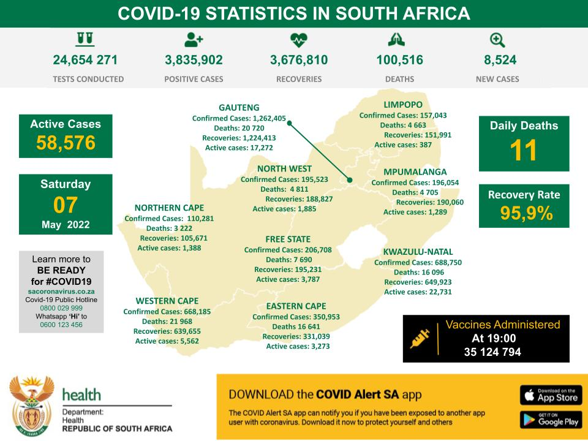

The global increase cases of Corona virus(Covid-19)
.jpeg)
Covid-19 statistics

Provinces with high number of cases in descending order
- Gauteng (about 1 200 000)
- Soweto with high number of deaths
- KZN (about 688 000)
- Western cape (about 668 000)
- Free state (about 206 000)
- FS top 5 places with high number of cases
- Harrismith (1 600 cases)
- Bethlehem (1 000 cases)
- Qwaqwa (800 cases)
- Warden (500 cases)
- Kestel (100 cases)
- FS top 5 places with high number of cases
- Mpumalanga (about 196 000)
- North west (about 195 000)
- Limpopo (about 157 000)
- Northern cape (about 110 000)
- Eastern cape (about 34 000 cases)
| Provinces | Number of cases | Number of recoveries | Death related cases |
|---|---|---|---|
| Gauteng | 1 262 405 | 1 224 413 | 20 720 |
| Eastern cape | 350 953 | 331 039 | 16 641 |
| North west | 195 523 | 188 827 | 4 811 |
| Mpumalanga | 196 054 | 190 060 | 4 705 |
| Limpopo | 157 043 | 151 991 | 4 663 |
| KZN | 688 750 | 649 923 | 16 096 |
| Northern cape | 110 281 | 105 671 | 3 222 |
| Free state | 206 708 | 195 231 | 7 690 |
| Western cape | 668 185 | 639 655 | 21 968 |
 |
|||
| Total number of cases | 3 835 902 | ||
| Number of recoveries | Number of deaths | ||
| 3 676 810 | 100 516 | ||